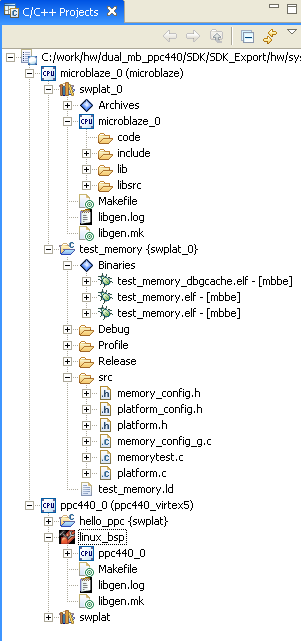

The Hierarchy View makes it easy to identify the relations between hardware platforms, processors within the hardware platform, software platforms per processor, and applications written using the software platform.
Software Application Projects have the following hierarchy:

Copyright © 1995-2009 Xilinx, Inc. All rights reserved.